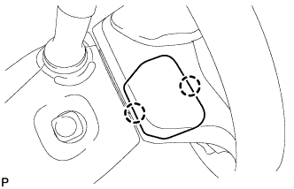
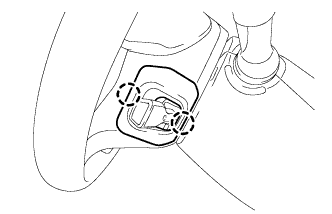
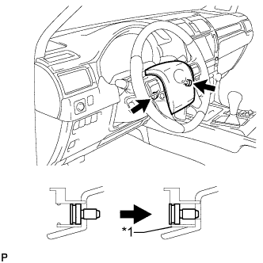
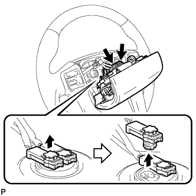
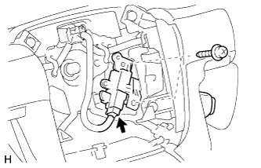

CRUISE CONTROL MAIN SWITCH > REMOVAL |
| 1. DISCONNECT CABLE FROM NEGATIVE BATTERY TERMINAL |
| Condition | Waiting Time |
| Vehicle enrolled in G-BOOK system | 6 minutes |
| Vehicle not enrolled in G-BOOK system | 1 minute |
| 2. REMOVE LOWER NO. 3 STEERING WHEEL COVER |
|  |
Detach the 2 claws and remove the cover.
| 3. REMOVE LOWER NO. 2 STEERING WHEEL COVER |
|  |
Detach the 2 claws and remove the cover.
| 4. REMOVE STEERING PAD |
|  |
Using a T30 "TORX" socket wrench, loosen the 2 screws until the groove along the screw circumference catches on the screw case.
| *1 | Screw Case |
|  |
Pull out the steering pad from the steering wheel as shown in the illustration. Then support the steering pad with one hand.
Disconnect the horn connector.
Disconnect the 2 connectors and remove the steering pad.
| 5. REMOVE CRUISE CONTROL MAIN SWITCH |
|  |
Disconnect the connector.
Remove the 2 screws and switch.